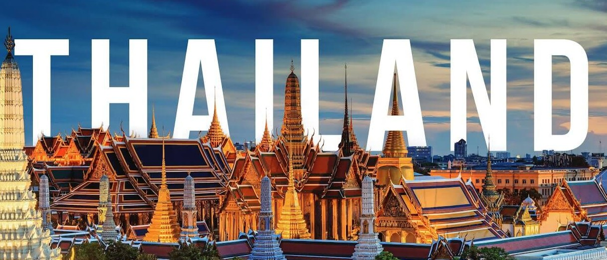
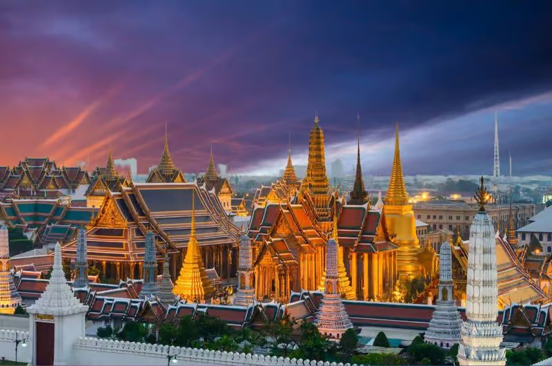
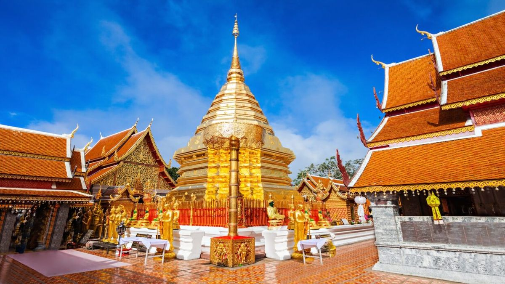

Travel • Straight Talk
14 Ways You're Doing Thailand Wrong (And How to Fix Every One)
Published 7 July 2026 • 12 min read

Nobody has a bad time in Thailand. That's the trap. The tourist version of this country is so smooth, so well-organised and so much fun that most visitors never notice they've been handed the curated edition — the one designed two streets deep, priced in a currency locals never pay, and photographed identically forty million times a year. We live here, and we watch it happen daily. So here it is, straight: fourteen ways visitors get Thailand wrong, and the fix for each one.
1. Your itinerary is packed like a Songkran pickup truck
This is the master mistake — the one that causes half the others on this list. Thailand is big, its transport runs on its own clock, and its whole culture moves at a pace that punishes hurry. Cram ten stops into twelve days and you'll spend your holiday in ferry queues and departure lounges, arriving everywhere tired and leaving everywhere too soon.
The fix: plan less, stay longer, and leave whole days empty. Every long-stayer you meet on a barstool here says the same sentence: "I wish I'd booked fewer places."
2. You're treating Bangkok as an airport with temples attached
Two nights in Bangkok before "escaping" to the beach is the classic first-timer move, and it's a robbery you commit against yourself. This is one of the great cities of the world: the Grand Palace and Wat Pho each deserve a day, Chatuchak eats half a Saturday, and neighbourhoods like Ari, Thonglor and Bang Rak run on rhythms no tour bus ever finds. Chinatown after dark alone is worth the flight.
The fix: four or five days minimum. Bangkok pays back every hour you give it.

3. You're eating from laminated photo menus
If there's a tout outside and the menu has pictures with English captions, you're paying triple for a worse plate than the cart twenty metres away. Street food isn't the cheap version of Thai food — it is Thai food. The auntie who's cooked the same noodle dish on the same corner for fifteen years answers to regulars who eat there every day. The tourist restaurant answers to nobody, because you're leaving on Thursday.
The fix: follow the lunch crowds, sit where the locals sit, point at what looks good. A 60-baht bowl will ruin the 250-baht version for you forever.
4. You booked the wrong coast for the season
Thailand runs three separate weather systems and they don't cooperate. The Andaman side — Phuket, Krabi, Koh Lanta — shines November through April. The Gulf islands — Samui, Phangan, Tao — run nearly the opposite calendar and can be a washout in November and December, exactly when the other coast is perfect. Booking Samui for Christmas expecting Phuket weather is one of the most common expensive mistakes in Thai travel.
The fix: check which coast your dates favour before you book anything, not after.
5. You're collecting places instead of experiencing them
Bangkok–Chiang Mai–Pai–Samui–Phangan–Krabi–Phuket in a fortnight means you technically saw all of it while spending half the trip in transit. Three days in Chiang Mai gets you the temples and the night market. A week gets you the cooking class, the café streets, the Chiang Rai day trip and a restaurant you'll still think about in ten years.
The fix: depth over breadth. Pick fewer places. Thailand isn't going anywhere — come back for the rest.
6. You never left tourist Thailand
Temples, beaches and pad thai is the postcard. The real thing is monks collecting alms at dawn, the shrine on the corner getting its morning offerings, the shophouse where three generations run one wok, the temple fair with molam music and zero tourists. None of it is hidden. It just doesn't come to your hotel lobby.
The fix: walk into a neighbourhood temple on a Tuesday morning. Eat breakfast at a fresh market. Get slightly lost on purpose. That Thailand is everywhere — it's just never on the itinerary.
7. You skipped the mainland entirely
Fly in, one rushed Bangkok day, straight to the islands — a huge share of visitors do exactly this and go home having seen Thailand's beaches and none of its soul. The islands are gorgeous and also the most internationally flattened part of the country. Ayutthaya's ruins are an hour from Bangkok. Kanchanaburi's river, waterfalls and war history are criminally under-visited. Chiang Mai is its own civilisation.
The fix: balance mainland and island time. Islands alone is just the postcard with sand in it.
8. You only know the famous beaches
Railay, Phi Phi, Patong and Chaweng are famous because they're beautiful — and they're also the most crowded, priciest sand in the kingdom. Thailand has hundreds of beaches. Koh Lanta gives you Phi Phi's scenery with a fraction of the boat traffic. Klong Muang has Railay's limestone without the queue. Koh Kood barely knows mass tourism exists.
The fix: see the marquee names once, then go one island or one bay further. That's where the magic still lives.
9. You're still moving at home speed
Thailand does not rush, and it will not start rushing because you're on a schedule. Meals take time. Service arrives when it arrives. Fighting this is like arguing with the humidity. The travellers who crack this country are the ones who surrender to its pace — the two-hour café sit, the yes to the unplanned conversation, the scenic route taken for no reason.
The fix: slow down. The best afternoon of your trip will be the one you didn't plan.
10. You booked Chiang Mai in burning season
This one carries an actual health warning. From roughly mid-February to late April, crop burning smothers the northern valleys in smoke. Air-quality readings in bad years reach levels where being outdoors is measurably harmful, the mountains vanish, and Doi Suthep's famous viewpoint stares into grey soup — while hotels charge full price.
The fix: do the north between November and February, and check a live AQI app before you commit. January Chiang Mai and March Chiang Mai are barely the same city.

11. You mistook tolerance for indifference
Thais are extraordinarily patient with visitors, and that patience gets misread as "anything goes." It doesn't. The bikini in the temple, the raised voice at the reception desk, the shoes worn past the pile at the door — all noticed, none commented on, which in Thai culture is itself the comment. The basics are easy: shoulders and knees covered at temples, shoes off where indicated, never touch a monk, keep your cool no matter what, and learn the wai — it opens more doors than money does.
The fix: this country gives visitors an enormous amount. Basic respect is not a burden; it's the entry fee, and it's cheap.
12. You're living in the two-price economy
Thailand is cheap — at Thai prices. There's a parallel tourist economy running 40 to 300 percent above it, and most visitors never leave it: the meterless taxi, the concierge-marked-up tour, the photo-menu restaurant, the un-negotiated tuk-tuk. The gap between the two economies is the most expensive thing most tourists never see.
The fix: use Grab, agree every price before the wheels move, eat where the staff of the tourist places eat, and walk one street away from any attraction before opening your wallet. Run your real numbers with ThaiHolidayBudget — the honest budget is lower than you think if you do it right.
13. You're treating Thailand as Southeast Asia's opening act
A few days here before the "real trip" to Vietnam or Indonesia — Thailand gets this constantly and deserves it never. This is one of the deepest, most varied countries on earth: four distinct regions, three coastlines, a food culture with no ceiling and two thousand years of history. Rushing through means you leave before you ever actually arrive.
The fix: give it a full trip of its own. The people who know Thailand best came for two weeks and stayed two months.
14. You think this was a one-time trip
This one's not a mistake, it's a prophecy. Something in this country gets under your skin — the food you'll fail to recreate at home, the pace that felt strange in week one and correct by week three, the chaos that always somehow resolves into a good story. There's a reason half the people you meet here are on visit number nine.
The fix: stop pretending. You're coming back. And when the "how long can I actually stay?" googling begins — it begins for everyone — ThaiVisaFinder has the answers in plain English.
The bottom line
Thailand is forgiving. You can commit every mistake on this list and still fly home raving about the trip — the tourist version really is that good. But the version that rearranges how you think about travel, the one that has you checking flight prices before your laundry's done, only opens up when you slow down, eat where the aunties eat, respect the culture that makes it all work, and give the country the time it quietly demands. That Thailand is two streets away, any day of the week. Walk over.